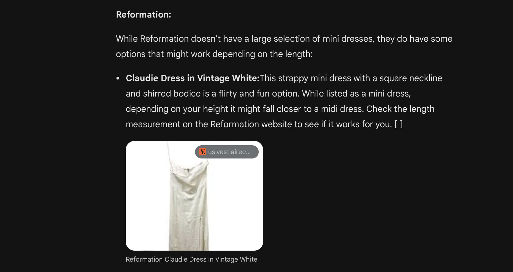
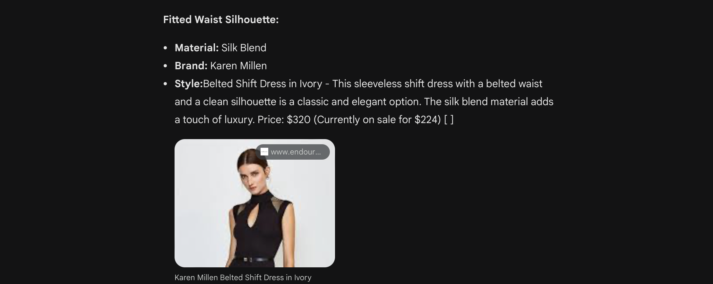

LLMs Looking for Graduation Dresses
I graduate next week and I need two dresses. I currently have one, but I would like options. I am hoping that AI will assist me in my search process by providing possible websites and options. I began with Gemini and ChatGPT, but realized that Gemini could supply physical links to possible products. This Blog Post documents my conversations with LLM’s to improve my shopping experience.
Prompt:
I am graduating from college and I need to find a white dress. Make a list of places I can use to shop online. My Budget is $375, but I would ideally want to buy two dresses. I need fast shipping and quality options. Gemini’s Response
Here are some online stores you can check out to find white graduation dresses with fast shipping and quality options, keeping in mind your budget of $375 for two dresses:
Lulu’s offers a wide range of graduation dresses, including white ones, that are all under $375. They have a large selection of styles to choose from, so you’re sure to find something that you love. Plus, they offer fast shipping options, so you can get your dress in time for graduation.
https://www.lulus.com
Showpo is another great option for affordable graduation dresses. They have a large selection of white dresses in a variety of styles, all for under $375. They also offer fast shipping options, so you can get your dress in time for graduation. Opens in a new window
https://www.showpo.com
ASOS is a great place to find trendy and stylish graduation dresses. They have a wide variety of white dresses in a variety of styles, all for under $375. They also offer fast shipping options, so you can get your dress in time for graduation.
https://www.asos.com/us/
Reformation offers sustainable and well-made dresses that are perfect for graduation. They have a smaller selection of white dresses, but the ones they do have are all beautiful and well-made. While some of their dresses might be outside your budget on their own, with strategic shopping you could find two that fit the bill. Their shipping times are also generally quite fast.
https://www.thereformation.com
Rent the Runway is a great option if you want to wear a designer dress for graduation without breaking the bank. They have a large selection of white dresses from top designers, and you can rent them for a fraction of the retail price. Their dresses tend to be more on the high-end and may not all fit within your budget, but it’s worth checking out their selection, especially if you know exactly what designer dress you want.
https://www.renttherunway.com
Here are some tips for shopping for graduation dresses online:
Read the reviews: Before you buy a dress, be sure to read the reviews from other customers. This can help you get a sense of the quality of the dress and the sizing.
Order a size up: If you’re between sizes, it’s always better to order a size up. You can always have the dress altered to fit you perfectly.
Consider the return policy: Make sure you know the return policy before you buy a dress. This way, you can be sure that you can return the dress if it doesn’t fit or if you don’t like it. Shop early: The closer you get to graduation, the more likely it is that dresses will sell out. So be sure to start shopping early so that you have a wider selection to choose from.
I want something more unique, classy, and quality. I want to be able to wear these dresses again. I am open to vintage and designer options as well. My favorite option out of the ones supplied is Reformation.Since you’re looking for classy, high-quality white dresses that you can wear again, here are some refined options that cater to your preferences and budget:
Reformation (Budget-friendly designer)** is a perfect choice! They focus on sustainable, well-made dresses with classic silhouettes that can easily transition to other events. Here are some ways to maximize your budget:
Focus on the Sale Section: Reformation has a dedicated sale section where you might find hidden gems at a discounted price. Look for dresses made from high-quality materials like silk or linen that would normally be outside your budget. Department Store Luxury Options: Many department stores have dedicated designer sections where you can find dresses within your budget, especially if you consider pre-owned:
www.nordstrom.com Nordstrom online store has a great selection of contemporary and designer dresses. Consider their “pre-owned” section where you might find gently used designer dresses for a fraction of the original price. They also offer free shipping and returns which can be helpful!
www.premiumoutlets.com Bloomingdale’s online store similar to Nordstrom, Bloomingdale’s offers a wide range of designer dresses. They also have a pre-owned section where you can find gently used designer pieces at a significant discount. They offer free shipping and returns on most orders.
www.saksfifthavenue.com Saks Fifth Avenue online store might have some options outside your budget, but they are known for their designer selection, and occasionally have sales that can bring the price down. It’s worth checking out their website or app, especially during special promotions. Vintage Websites:
The RealReal RealReal online store is a curated marketplace for pre-owned luxury goods. You can find a great selection of vintage designer dresses here, and they authenticate everything before it’s listed for sale. While some dresses may be above your budget, with strategic searching you might find the perfect dress at a significant discount. Things to Consider When Shopping Online for Vintage or Designer Dresses:
Measurements: Pay close attention to the measurements listed for the dress. Since you can’t try it on beforehand, ensure the measurements align well with yours. Condition: When shopping pre-owned, be sure to read the description carefully about the condition of the dress. Look for high-quality photos that allow you to see the details of the dress. Return Policy: Check the return policy before you buy, especially when shopping vintage or pre-owned. This way, you can be sure you can return the dress if it doesn’t fit or isn’t as described. Additional Tips:
Tailoring is your friend: Even if you find a dress that almost fits perfectly, a tailor can make small adjustments to ensure a flawless look. Classic silhouettes are timeless: A sheath dress, a wrap dress, or a fit-and-flare dress are all classic silhouettes that will never go out of style. Invest in quality fabrics: Look for dresses made from natural fibers like silk, linen, or cotton. These fabrics will drape better and last longer. With a little effort, you should be able to find two beautiful white graduation dresses that you can wear and treasure for years to come!
Many of the recommendations are places I have already looked, which is not super helpful. I already found one dress on ShopBop before attempting to use LLMs. I’m going to continue framing my prompts specifically and trying to pull more likeable options.
Below, you can see Gemini actually provide a link to an option. I just asked for an actual option Moving forward, I would love to see an entire list of options with links.

https://us.vestiairecollective.com/women-clothing/dresses/reformation/white-linen-reformation-dress-42383851.shtml
Thank you for these options. Could you find me a dress that is not on a 2nd hand site or platform. The Budget is $375. I like all lengths. For sleeves, I prefer sleeveless to strapless. I am fine with most necklines. For fit, I would like something that fits the waist well or something flows. I prefer quality materials: Silk, Linen, Cotton, Wool, Leather, etc. I would like something unique and classy. My dress size is a US 4/Small. Can you please create a list of possible options with links. 
Here is where everything decreased in quality, since the responses included options that clearly did not fit my guidelines. As you can see above, this dress is black. There were also other options outside of my price range and on 2nd hand sites (at first I was okay with vintage, but then I minimized that to help receive tailored options).
ChatGPT’s Response
Congratulations on your graduation! It’s great that you’re looking for white dresses online. With your budget and preferences in mind, here’s a list of online stores where you can find quality white dresses with fast shipping options:
ASOS:
ASOS offers a wide range of affordable and stylish white dresses. They often have sales and promotions that can fit within your budget. Fast shipping options are available, including express delivery.
Nordstrom:
Nordstrom carries a variety of white dresses from different brands and designers. Look for their “Under $200” or “Under $300” sections to find budget-friendly options. Nordstrom offers fast shipping, including expedited options for quicker delivery.
Revolve:
Revolve features trendy and contemporary white dresses suitable for graduation. Browse their selection for options within your budget range. They offer quick shipping, and you can filter by shipping time to find items that can be delivered promptly.
Lulus:
Lulus specializes in affordable and stylish dresses, including many white options. You can find elegant graduation dresses within your budget. They offer expedited shipping options for faster delivery.
Boohoo:
Boohoo has a wide range of white dresses at budget-friendly prices. Check their sale section for additional discounts. Boohoo often provides fast shipping options, including express delivery.
Amazon:
Amazon offers a vast selection of white dresses from various sellers. Look for dresses with Prime shipping for faster delivery. Read customer reviews to ensure quality and fit.
H&M:
H&M features affordable white dresses suitable for graduation. Explore their online store for stylish options. They offer fast shipping services.
Zara:
Zara offers chic and fashionable white dresses. Check their online store for dresses within your budget. Zara provides expedited shipping options for quick delivery.
Macy’s:
Macy’s carries a range of white dresses from different brands. Look for dresses on sale or clearance to maximize your budget. They offer fast shipping services.
Missguided:
Missguided has trendy white dresses at affordable prices. Explore their selection for graduation-appropriate styles. They provide quick shipping options.
When shopping online, remember to check the shipping policies, delivery times, and return/exchange options to ensure a smooth purchasing experience. Additionally, look for customer reviews and size guides to make informed decisions about the dresses you choose. Happy shopping and best wishes for your graduation!
I want something more unique, classy, and quality. I want to be able to wear these dresses again. I am open to vintage and designer options as well. My favorite option out of the ones supplied is Reformation.It’s wonderful that you’re looking for unique, classy, and quality white dresses that you can wear beyond graduation, including considering vintage and designer options. Revolve is a great choice as they offer a curated selection of stylish and higher-end dresses. Here are some tailored recommendations to explore on Revolve and a few additional suggestions to help you find the perfect dresses:
Revolve:
Revolve carries a variety of designer and boutique brands known for unique and quality pieces. Explore their selection of white dresses, including options suitable for graduation and beyond. Look for dresses from brands like Lovers + Friends, Tularosa, Majorelle, and House of Harlow 1960 for elegant and timeless styles.
Net-a-Porter:
Net-a-Porter is a luxury online retailer offering a range of designer dresses. Browse their white dress collection for high-quality options that can be worn for special occasions. Consider brands like Zimmermann, Self-Portrait, and Reformation for sophisticated and stylish dresses.
Shopbop:
Shopbop features a curated selection of designer and contemporary white dresses. Explore their assortment of dresses suitable for graduation and future events. Look for brands like Veronica Beard, Ulla Johnson, and ASTR the Label for chic and versatile dresses.
The RealReal:
The RealReal specializes in pre-owned luxury fashion, including vintage designer dresses. Discover unique and timeless white dresses from top designers like Chanel, Gucci, and Dior. Explore their collection for sustainable and one-of-a-kind options.
Farfetch:
Farfetch is an online platform that connects you to boutiques worldwide, offering a diverse range of designer dresses. Search for white dresses from emerging and established designers for a distinctive look. Consider brands like Ganni, Rixo, and Rotate Birger Christensen for modern and sophisticated styles.
Etsy:
Etsy is a great platform for finding unique vintage and handmade white dresses. Explore vintage shops on Etsy for one-of-a-kind pieces that can be styled for various occasions. Look for vintage dresses from the 1960s, 1970s, or 1980s for a timeless and classy vibe.
Reformation:
Reformation offers sustainable and chic white dresses that are perfect for graduation and beyond. Explore their selection of eco-friendly dresses made from quality materials. Look for classic silhouettes and flattering designs that can be dressed up or down. When browsing these websites, use filters to narrow down your search based on price, style, size, and brand preferences. Consider investing in versatile dresses that can be styled differently for various occasions to maximize wearability. Also, check customer reviews and return policies to ensure satisfaction with your purchase. Happy shopping and enjoy finding your perfect graduation dresses!
Overall, it was interesting to see the options LLM’s provides and how they align with my shopping preferences. I shop at a lot of the Brands that were recommended. For practicality reasons, this was not helpful because I was looking for new options and websites. I was hopeful with Gemini, since it began to generate responses that included specific listings and links. This was short lived, because it began to respond with options that were not my size, the wrong color, sold out, and other guideline I provided. I think LLM’s lack knowledge surrounding shopping and probably just resort to the websites that are most popular according to the users prompt. There was not anything unique about the responses - styles, brands, etc. Furthermore, I believe LLM’s could be leveraged to empower up & coming emerging designers and low-key brands. I am still in need of a second graduation dress, but this experience had opened my eyes to new possibilities with LLMs. Hopefully this helps someone else looking for Graduation dresses!